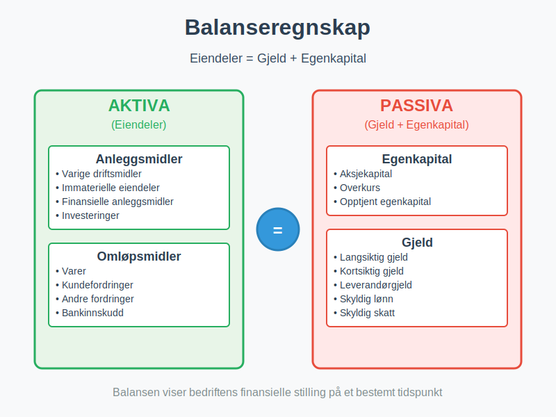
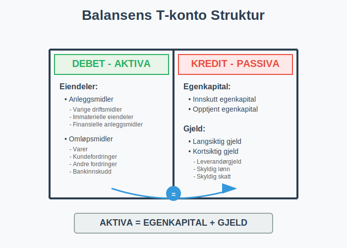
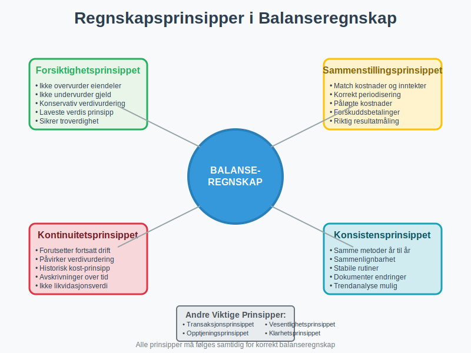
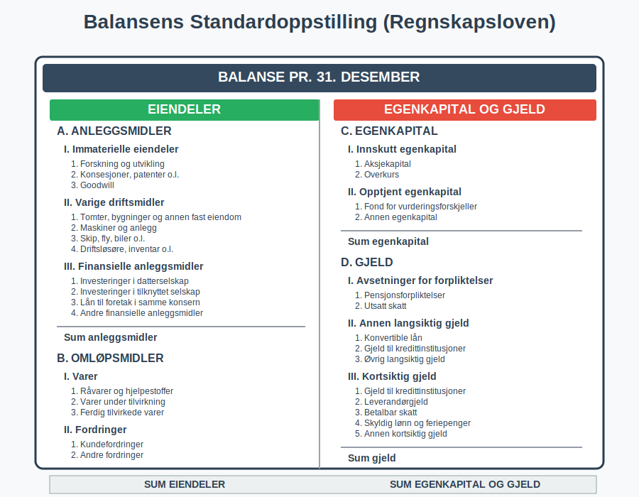
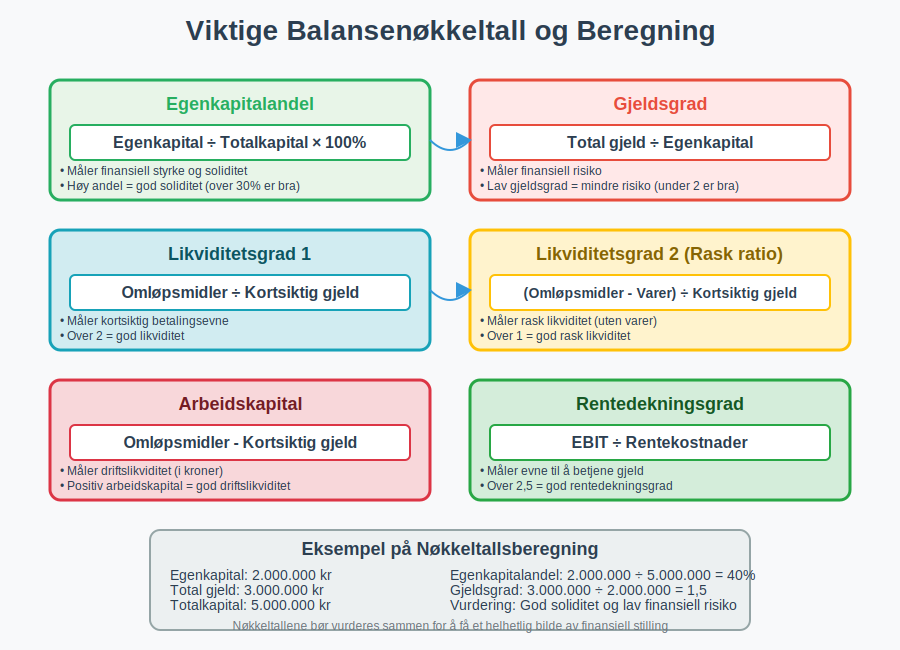
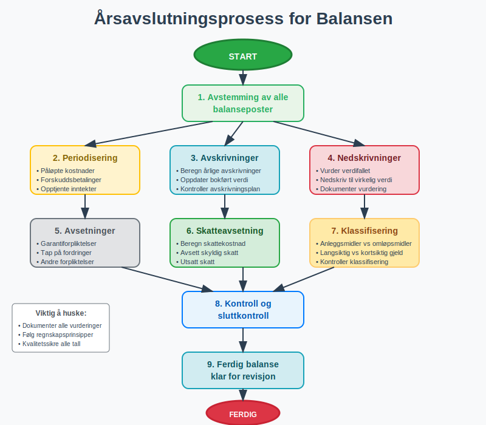
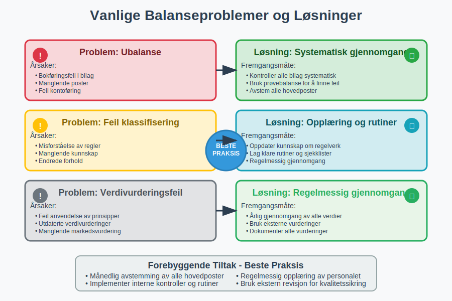

Balanseregnskap er regnskapsføring og analyse av balansen som viser bedriftens finansielle stilling på et bestemt tidspunkt. Balansen er en av de tre hovedrapportene i regnskapet og følger den grunnleggende regnskapsligningen: Eiendeler = Gjeld + Egenkapital. Som en sentral del av eksternregnskapet gir balansen eksterne interessenter viktig informasjon om bedriftens økonomiske stilling.

Hva er Balanseregnskap?
Balanseregnskap omfatter alle prosesser knyttet til utarbeidelse, analyse og tolkning av balansen. Dette inkluderer:
- Registrering av alle eiendeler og forpliktelser
- Klassifisering av poster i korrekte balansekategorier
- Verdivurdering av aktiva og passiva
- Presentasjon i henhold til regnskapsstandarder
- Analyse av finansiell stilling og soliditet
Balansens Grunnleggende Struktur
Balansen er bygget opp som en T-konto hvor venstre side viser eiendeler (aktiva) og høyre side viser gjeld og egenkapital (passiva):

Balansens Hovedkomponenter
Eiendeler (Aktiva)
Eiendeler representerer alt bedriften eier og kontrollerer som kan gi fremtidige økonomiske fordeler.
Anleggsmidler
Anleggsmidler er eiendeler som skal brukes i virksomheten over lengre tid:
- Varige driftsmidler: Bygninger, maskiner, inventar
- Immaterielle eiendeler: Goodwill, patenter, programvare
- Finansielle anleggsmidler: Langsiktige investeringer, aksjer
Omløpsmidler
Omløpsmidler er eiendeler som normalt omsettes innen ett år:
- Varer: Råvarer, halvfabrikata, ferdigvarer
- Fordringer: Kundefordringer, andre kortsiktige fordringer
- Investeringer: Kortsiktige finansielle plasseringer
- Bankinnskudd: Kontanter og bankinnskudd
Gjeld og Egenkapital (Passiva)
Passiva viser hvordan eiendelene er finansiert - enten gjennom gjeld eller egenkapital.
Egenkapital
Egenkapital representerer eiernes andel av bedriften:
- Innskutt egenkapital: Aksjekapital, overkurs
- Opptjent egenkapital: Fri egenkapital, årets resultat
Gjeld
Gjeld er forpliktelser bedriften har overfor andre:
- Langsiktig gjeld: Lån med forfallstid over ett år
- Kortsiktig gjeld: Leverandørgjeld, skyldig lønn, kortsiktige lån
Regnskapsprinsipper i Balanseregnskap
Grunnleggende Prinsipper
Balanseregnskap følger flere fundamentale regnskapsprinsipper:

| Prinsipp | Beskrivelse | Betydning for Balansen |
|---|---|---|
| Forsiktighetsprinsippet | Ikke overvurder eiendeler eller undervurder gjeld | Konservativ verdivurdering |
| Sammenstillingsprinsippet | Match inntekter med tilhørende kostnader | Korrekt periodisering |
| Kontinuitetsprinsippet | Forutsetter fortsatt drift | Påvirker verdivurdering |
| Konsistensprinsippet | Samme metoder fra år til år | Sammenlignbarhet |
Verdivurderingsprinsipper
Verdivurdering av balanseposter følger spesifikke regler:
- Historisk kost: Anskaffelseskost minus avskrivninger
- Laveste verdis prinsipp: Laveste av anskaffelseskost og virkelig verdi
- Virkelig verdi: Markedsverdi på balansetidspunktet
For en dypere forståelse av hvordan eiendeler og gjeld verdivurderes i balansen, se vår omfattende guide til balansebasert verdivurdering.
Balansens Oppstilling og Klassifisering
Standardoppstilling
Norske bedrifter følger regnskapsloven for balansens oppstilling:

Klassifiseringsregler
Klassifisering av balanseposter følger spesifikke kriterier:
Anleggsmidler vs. Omløpsmidler
- Anleggsmidler: Eies for bruk i virksomheten, ikke for salg
- Omløpsmidler: Omsettes eller forbrukes innen normal driftssyklus
Langsiktig vs. Kortsiktig Gjeld
- Langsiktig gjeld: Forfaller senere enn 12 måneder
- Kortsiktig gjeld: Forfaller innen 12 måneder
Balanalyse og Nøkkeltall
Viktige Balansenøkkeltall
Balanalyse bruker nøkkeltall for å vurdere finansiell stilling:

| Nøkkeltall | Formel | Hva det måler |
|---|---|---|
| Egenkapitalandel | Egenkapital ÷ Totalkapital × 100% | Finansiell styrke |
| Gjeldsgrad | Total gjeld ÷ Egenkapital | Finansiell risiko |
| Likviditetsgrad 1 | Omløpsmidler ÷ Kortsiktig gjeld | Kortsiktig betalingsevne |
| Likviditetsgrad 2 | (Omløpsmidler - Varer) ÷ Kortsiktig gjeld | Rask likviditet |
| Arbeidskapital | Omløpsmidler - Kortsiktig gjeld | Driftslikviditet |
Soliditetsanalyse
Soliditet måler bedriftens evne til å tåle tap og økonomiske tilbakeslag:
- Høy egenkapitalandel: Indikerer god soliditet
- Lav gjeldsgrad: Mindre finansiell risiko
- Stabil arbeidskapital: God driftslikviditet
Praktisk Balansehåndtering
Månedlig Balanseavstemming
Regelmessig avstemming sikrer korrekt balanseregnskap:
- Bankavstemming: Kontroller banksaldo mot reskontro
- Kundeavstemming: Avstem kundefordringer
- Leverandøravstemming: Kontroller leverandørgjeld
- Lageravstemming: Verifiser varebeholdning
Årsavslutningsprosedyrer
Ved årsavslutning kreves spesielle prosedyrer:

Viktige Årsavslutningsoppgaver
- Periodisering: Sikre korrekt periodeavgrensning
- Avskrivninger: Beregn og bokfør årlige avskrivninger
- Nedskrivninger: Vurder behov for nedskrivning av eiendeler
- Avsetninger: Opprett nødvendige avsetninger
- Skatteavsetning: Beregn og avsett for skattekostnad
Digitale Verktøy for Balanseregnskap
Moderne Regnskapssystemer
Digitalisering har revolusjonert balanseregnskap:
- Automatisk kontering: Reduserer manuelle feil
- Sanntidsrapportering: Oppdatert balanse til enhver tid
- Integrasjoner: Kobling til bank og andre systemer
- Analyseverktøy: Innebygde nøkkeltallsberegninger
Kvalitetssikring
Digitale kontroller forbedrer kvaliteten:
- Automatisk avstemming: Systemet avstemmer automatisk
- Varslinger: Advarsler ved ubalanse eller feil
- Revisjonsspor: Komplett historikk over endringer
- Backup: Sikker lagring av regnskapsdata
Regelverk og Standarder
Norsk Regnskapslovgivning
Regnskapsloven regulerer balanseregnskap i Norge:
- Regnskapsplikt: Hvem som må føre regnskap
- Regnskapsprinsipper: Grunnleggende prinsipper
- Oppstillingsplaner: Standardiserte formater
- Notekrav: Tilleggsinformasjon til balansen
Internasjonale Standarder
For større bedrifter gjelder IFRS (International Financial Reporting Standards):
- IAS 1: Presentasjon av finansielle rapporter
- IAS 16: Varige driftsmidler
- IAS 38: Immaterielle eiendeler
- IFRS 9: Finansielle instrumenter
Vanlige Utfordringer og Løsninger
Typiske Balanseproblemer
Vanlige utfordringer i balanseregnskap:

| Problem | Årsak | Løsning |
|---|---|---|
| Ubalanse | Bokføringsfeil eller manglende poster | Systematisk gjennomgang av alle poster |
| Feil klassifisering | Misforståelse av klassifiseringsregler | Opplæring og rutiner |
| Verdivurderingsfeil | Feil anvendelse av prinsipper | Regelmessig gjennomgang av verdier |
| Manglende avstemming | Dårlige rutiner | Implementer månedlige avstemminger |
Beste Praksis
Anbefalte rutiner for godt balanseregnskap:
- Månedlig avstemming: Avstem alle hovedposter månedlig
- Dokumentasjon: Dokumenter alle vurderinger og beslutninger
- Kompetanse: Sørg for oppdatert kunnskap om regelverk
- Kontroller: Implementer interne kontroller
- Revisjon: Bruk ekstern revisjon for kvalitetssikring
Fremtiden for Balanseregnskap
Teknologiske Trender
Nye teknologier påvirker balanseregnskap:
- Kunstig intelligens: Automatisk kategorisering og analyse
- Maskinlæring: Prediktiv analyse og feildeteksjon
- Blockchain: Sikker og transparent regnskapsføring
- Sanntidsrapportering: Kontinuerlig oppdaterte balanser
Regulatoriske Endringer
Fremtidige endringer i regelverk:
- Økt digitalisering: Krav til elektronisk rapportering
- Bærekraftsrapportering: Nye krav til ikke-finansiell informasjon, inkludert CSRD for større bedrifter
- Internasjonalisering: Harmonisering av standarder
- Transparens: Økte krav til offentliggjøring
Konklusjon
Balanseregnskap er fundamentalt for å forstå og styre bedriftens finansielle stilling. En korrekt og oppdatert balanse gir verdifull innsikt i:
- Finansiell styrke: Egenkapitalandel og soliditet
- Likviditet: Evne til å møte kortsiktige forpliktelser
- Effektivitet: Hvor godt eiendeler utnyttes
- Risiko: Finansiell risiko og sårbarhet
Ved å følge etablerte prinsipper, bruke moderne verktøy og implementere gode rutiner, kan bedrifter sikre høy kvalitet i sitt balanseregnskap og få maksimal nytte av denne viktige finansielle rapporten.
God forståelse av balanseregnskap er essensielt for alle som arbeider med regnskap, økonomi og bedriftsledelse, og danner grunnlaget for informerte beslutninger om bedriftens fremtid.